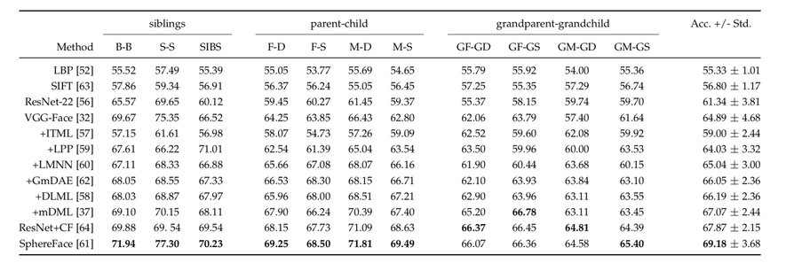
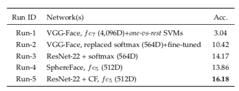

Families In the Wild: A Kinship Recognition Benchmark

Introduction
FIW supports laboratory style evaluation protocols, Kinship Verification (i.e., one-to-one ) and Family Classification (i.e., one-to-many).
Kinship Verification
Kinship verification tests were run on previously tested pairs such as siblings,
mother–daughter, father–son, etc. along with four newly introduced multi generational pairs
between
grandparents
and grandchildren in the FIW database. With the Fine-Tuned CNN model, we saw an average of a 4% increase in
accuracy from the VGG-Face model. The benchmark tests were completed by randomly selecting an equal number of
positive and negative pairs for each family, then computing cosine similarity for each pair.

Averaged verification accuracy scores (%) for 5-fold experiment on FIW. Note that there was no family
overlap between folds.
Family Classification
By fine-tuning the VGG-Face model, we achieved an average of a 1% increase in accuracy. This was accomplished
by
following the 5-fold cross-validation protocol with no family overlap on families with more than five members.
Folds were then made up of one member for each family and multi-class SVM was used to model VGG-Face features
for each family.

Family classification accuracy scores (%) using 524 families.